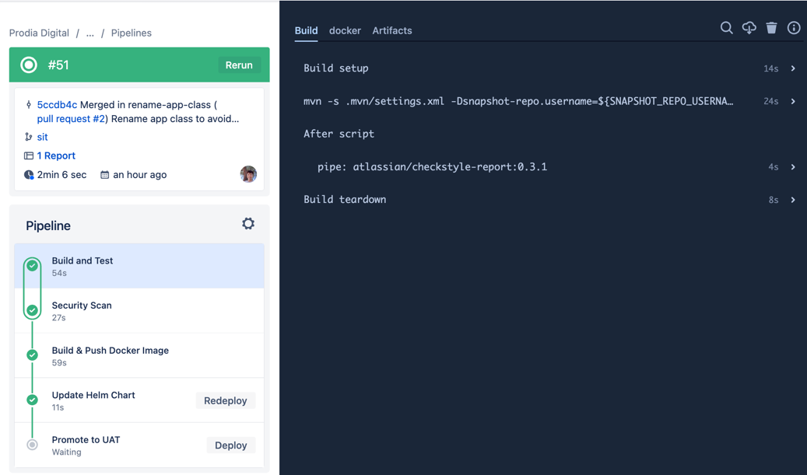
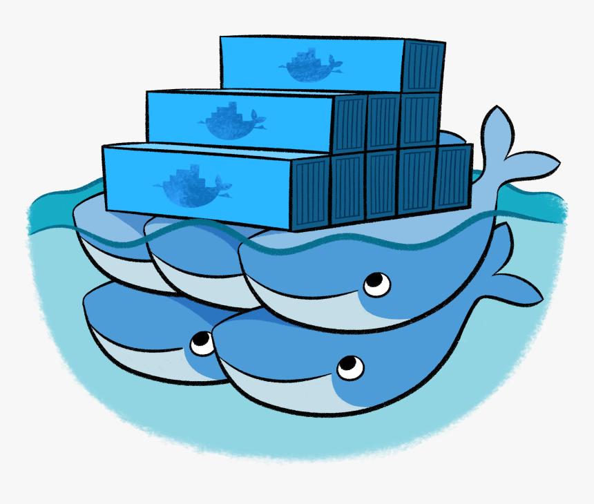

From Code to Cloud Native
How DevOps works in Enterprise Projects
by Kevin Lin, Kin Yung Cheung
As a project team, every engineer should know the basics of docker/kubernetes Raise interest to inspire some of you to take up trainings For the sceenshots, we are going to show whatever is used in Prodia project
Zuhlke Engineering Asia
I have written a Java API Service
What's next?
Kevin: what does it take to deploy to the Cloud? Kin: so you want the service to be accessible by others? Kevin: Yes... Kin: wouldn't it be nice if you don't need to worrying about dependencies...? Kevin: Sure, how can I do that? Kin: Put it in a container
Zuhlke Engineering Asia
Put it in a Container
or simply a Docker container
1. Isolation (namespace) 1. Limitation (cgroups) 1. Simulation (fsroot)
Kevin: What is a container? Kin: Containerisation or dockerization ... is a form of virtualisation which is much lighter weight than VMs Kevin: okay... Kin: 1. In a container, your application operates in an isolated environement ... and 2. you can decide what OS and dependeceies are available in the environment. 3. Since containers run on top of a host and it is the job of the host to make sure that you have the CPU/memory resources that your container needs. 4. The way that a host manages resources is like airlines overbooking seats on flight so that it can maximise the utilisation of hardware resources it has 5. Ultimately, you can run more applications with given hardware resources that a server has. Pretty cool ah? Kevin: yeah, but how do I have a container?
Zuhlke Engineering Asia
Typical dockerfile for a SpringBoot microservice
-- FROM amazoncorretto:18-alpine-jdk
ARG JAR_FILE=target/*.jar COPY ${JAR_FILE} app.jar
EXPOSE 8080
ENTRYPOINT ["java","-jar","/app.jar"] --
Kin: 1. to create a docker container, you need to create a docker image first and you need a dockerfile to do that 2. a dockerfile can be as simple as a few lines but it can get large too if your applicaiton has many dependencies 3. each line is basically an "instruction". each instruction will result an extra layer in a docker image. 4. the more instructions you have, the more layers will result and the bigger a docker image will become Kevin: Okay, so it is better to keep it small then Kin: (explain about the file) Kevin: then what's next?
--
FROM amazoncorretto:18-alpine-jdk
ARG JAR_FILE=target/*.jar
COPY ${JAR_FILE} app.jar
EXPOSE 8080
ENTRYPOINT ["java","-jar","/app.jar"]
--Zuhlke Engineering Asia
What need to done for Docker that is deployable
1. Run the Docker command to build the image 1. Security scan on the image for CVE (expliots) 1. Publish to a docker registry, i.e.
- Dockerhub - AWS ECR - etc
Kin: (read slide) Kevin: Do I need to do this every I want to build a docker image? How do I make sure these steps are run every time correctly? Kin: If you want to automate this step, we need a CI platform
Zuhlke Engineering Asia
Continuous Integration (CI) platform comes to rescue
- Jenkins / CloudBees (for on-prem environments, mostly) - GitHub Actions - Bitbucket Pipeline - CircleCI
Kevin: Okay, can you show me what a CI platform looks like? Kin: sure
Zuhlke Engineering Asia
Bitbucket Pipeline
- Comes bundled with Bitbucket - Integrate well with JIRA/Confluence - Easy-to-use, developer-friendly UI
1) a CI pipeline has a few common steps, such as test, build, scan, package, and the last step might involve deployment 2) a pipeline is normally triggered by a code commit and it should be done automatically 3) any unsuccessful builds or tests should be reported by the CI platform immediately 4) since every operation is recorded, we are able to know who is responsible for each build Kevin: Wow, that's pretty cool. You can see each step very clearly and even logs as well. Kin: Yep
Zuhlke Engineering Asia
CI Flow
Kevin: Is it hard to setup a CI pipeline? how to create one?

Zuhlke Engineering Asia
definitions: steps: - parallel: &unit-Test - step: name: Build and Test - step: name: Security Scan
- step: &build-artifact-and-deploy name: Build Image and Update Helm Chart
- step: &promote-to-env
pipelines: default: - parallel: *unit-Test branches: sit: - parallel: *unit-Test - step: <<: *build-artifact-and-deploy deployment: sit - step: <<: *promote-to-env name: Promote to UAT trigger: manual deployment: uat
- it depends on... setting up a CI pipeline can be complex and it also can quite simple. - some CI platforms support more features, such as folder-level code change detections so that you can build only whats been changed. that's great for monorepos. - but most pipeline scripts consist of two big sections, a pipelines section and a steps section. - the pipelines section ..... - the steps section ... - after you have created a CI script like this, you simple put it together with the source code that you want to build. The CI platform will read the script and run it accrodingly. Kevin: so after a CI pipeline is done, where is my application? has it been deployed to the cloud yet?
definitions:
steps:
- parallel: &unit-Test
- step:
name: Build and Test
- step:
name: Security Scan
- step: &build-artifact-and-deploy
name: Build Image and Update Helm Chart
- step: &promote-to-env
pipelines:
default:
- parallel: *unit-Test
branches:
sit:
- parallel: *unit-Test
- step:
<<: *build-artifact-and-deploy
deployment: sit
- step:
<<: *promote-to-env
name: Promote to UAT
trigger: manual
deployment: uatZuhlke Engineering Asia
Where do we deploy a docker image to?
and how do we do that?
1. Host it on a single server
- AWS EC2 - GCP Compute Instance Cloud
Is it good enough for you?
- No, not yet. we are just half way there. Up to this point, your docker image is stored in a docker registry. - what comes next depends on what you need for your applications. Things like availability, scalability, security, etc.. - is hosting on a single server enough for you? Kevin: No... this API service is mission critical and we need it to be running 24x7 and scale accordingly Kin: Okay, it sounds important and we need something more...
Zuhlke Engineering Asia
Things to consider:
How do you make sure the docker is running properly?
- What happens when it _crashes_?
What if we want to have multiple instances to form a cluster?
- What happens when one of the _instances_ went down?
What if we want to have 10s or 100s of services running together in a target environment?
- Would it be cool if a service can _auto-scale_ when it is under heavy load?
Zuhlke Engineering Asia
How containers work at scale
# #
Zuhlke Engineering Asia
Let's talk about Kubernetes
* Orchestration system for automating container deployment, scaling, and management * Original introduced by Google, now maintained by CNCF * De-factor standard to deploy and operate containerized applications
Kin: (slide) Kevin: Okay
Zuhlke Engineering Asia
Kin: - haha, Kubernetes is quite a beast and it is ~complex~ but lucklily we don't need to manage everything ourselves nowadays - Kubernetes has two parts. The control plane and worker nodes. - Unless you are extremely lucky and have to create kubernetes form scratch, you don't need to worry much about the control plane because there are plenty of managed services out there that can manage the control plan for you. They will make sure it - Mostly likely as a developer, you will only need to worry about worker nodes because it is where your applications are running on - As you can see that pods are running on nodes and we can think of nodes as VMs on different phyical servers - In cloud environments, a kubernetes cluster is made up of multiple nodes that are phyiscally located in different availability zones. Kevin: Do I always have to pay to even use Kubernetes? Even when I just want to try it on my local machine?

Zuhlke Engineering Asia
Different flavors of Kubernetes:
- Local: - Minikube (single-node), K3s (light-weight & production-grade) - Self-managed Kubernetes (control plane & worker nodes) - On-prem/Private Cloud: - OpenShift (Redhat & enterprise support) - Managed Kubernetes services: - EKS (AWS), GKE (GCP), AKS (Azure), DigitalOcean etc
Kin: (slide) Kevin: Is that all we need to know about Kubernetes? Kin: hmm... not quite
Zuhlke Engineering Asia
Kubernetes in Summary
- Everything run in Kubernetes are resource objects - Pod - Deployment - Service - Ingress - ConfigMap - Secret - ...
Zuhlke Engineering Asia
- Pod is the smallest unit in kubernetes but it is still larger than a container - (continue onto 'container', 'deployment', 'service', and others)

Zuhlke Engineering Asia
Live Demo of
Kubernetes
Pause for questions Explain Rancher, demo again using K9s
Zuhlke Engineering Asia
Demo summary
1. Resources can be created & destroyed using YAML files 2. Auto recovery is supported out of the box 3. Pods can be accessed through port-forward or LB, BUT... 4. ** Should use an ingress controller instead because you don't want to create one LB for every service. It is expensive!
Kevin: do we have to create resources manually?
Zuhlke Engineering Asia
How exactly do I deploy to Kubernetes Cluster?
1. Manually via - kubectl apply -f deployment.yaml
1. Via a Continuous Deployment (CD) platform
- ArgoCD - Flux CD - Octopus Deploy - Spinnaker
Zuhlke Engineering Asia
Helm Chart
- For a typical microservice with minimum resources: 1. deployment.yaml 2. service.yaml 3. ingress.yaml - Managing YAML files for many similar services will introduce a huge maintenance overhead - Using templates and variable overrides can help

Zuhlke Engineering Asia
Helm Chart & Kustomize
Helm3 is an imperative templating tool for managing Kubernetes packages called charts.
- Charts are a templated version of your yaml manifests with a subset of Go Templating mixed throughout. - Chart is also a _package manager_ for kubernetes that can package, configure, and deploy/apply the helm charts onto kubernetes clusters.
Kustomize: is a declarative tool, which works with yaml directly and works as a stream editor like sed.
- kubectl apply -k environment/sit - It _doesn’t add additional abstraction layer at all. It permits you to add logic into YAML_, that’s all. - It is a purely declarative approach to configuration customization. - It runs as a standalone binary, which makes it perfect for CI/CD pipelines.
Zuhlke Engineering Asia
service.yaml
{{- define "library-chart.service.tpl" -}} {{- $requiredMsg := include "library-chart.default-check-required-msg" . -}} apiVersion: v1 kind: Service metadata: name: {{ include "library-chart.name" . }} labels: {{- include "library-chart.labels" . | nindent 4 }} spec: type: {{ (.Values.service).type | default "ClusterIP" | quote }} ports: - port: {{ (.Values.service).port | include "default.port" }} targetPort: {{ (.Values.service).targetPort | default "8080" }} protocol: TCP name: http selector: {{- include "library-chart.selectorLabels" . | nindent 4 }} {{- end -}} {{- define "library-chart.service" -}} {{- include "library-chart.util.merge" (append . "library-chart.service.tpl") -}} {{- end -}}Kin: - this is a helm template for a service YAML file, which looks a little different from a regular YAML file. - it does take a bit of learning curve to get used to and it is relatively difficult to debug due to indentations and brackets - (placeholders, default values, piping, variables and function calls)
{{- define "library-chart.service.tpl" -}}
{{- $requiredMsg := include "library-chart.default-check-required-msg" . -}}
apiVersion: v1
kind: Service
metadata:
name: {{ include "library-chart.name" . }}
labels:
{{- include "library-chart.labels" . | nindent 4 }}
spec:
type: {{ (.Values.service).type | default "ClusterIP" | quote }}
ports:
- port: {{ (.Values.service).port | include "default.port" }}
targetPort: {{ (.Values.service).targetPort | default "8080" }}
protocol: TCP
name: http
selector:
{{- include "library-chart.selectorLabels" . | nindent 4 }}
{{- end -}}
{{- define "library-chart.service" -}}
{{- include "library-chart.util.merge" (append . "library-chart.service.tpl") -}}
{{- end -}}Zuhlke Engineering Asia
values-sit.yaml
# deployment.yaml image: tag: "hello-world-api-poc-ee2a450c"
service.yaml
service: path: sample-api
deployment.yaml
replicas: 1
configmap.yaml
config: application.yml: |- greeting: message: Say Hello to the World 123 farewell: message: Say Goodbye
# deployment.yaml
image:
tag: "hello-world-api-poc-ee2a450c"
# service.yaml
service:
path: sample-api
# deployment.yaml
replicas: 1
# configmap.yaml
config:
application.yml: |-
greeting:
message: Say Hello to the World 123
farewell:
message: Say GoodbyeZuhlke Engineering Asia
Kustomize
- base - deployment.yaml - service.yaml - etc. - patches (overlays) - environment/sit - environment/uat - etc.

Zuhlke Engineering Asia
GitOps
What is GitOps? - Takes DevOps best practices used for application development and applies them to infrastructure automation, including _version control_ for tracking changes
What is GitOps used for? - Automate the process of _provisioning infrastructure_ by storing configuration files as code (infrastructure as code).
How does GitOps work? - GitOps configuration files _generate the same infrastructure environment every time it’s deployed_, just as application source code generates the same application binaries every time it’s built.
Zuhlke Engineering Asia
ArgoCD
Continuous deployment to kubernetes made easy
1. Declarative approach - I want 2 replicas, 1 ingress controller and 1 config map for service A - I wast 3 replicas, 1 secret and 1 persistent storage for service B 2. Based on the desired target state in git, ArgoCD keeps the environment in-sync 3. If someone has accidentally changed the environment, ArgoCD will revert the change back the target state
Zuhlke Engineering Asia
CD Flow

Zuhlke Engineering Asia
ArgoCD Live Demo
Zuhlke Engineering Asia
K9s
- Rancher is great but - I have to install it in my cluster and it is a pain to install - it takes up pod space in my cluster - it has tons of features but I just want to know what's running in my clusters - I like commmand line
Zuhlke Engineering Asia
What's Next?
Zuhlke Engineering Asia
Advanced topics
- Configuration management - ConfigMap vs config service vs env vars - Secret management - Sealed Secret - Operation dashboard - Logging: Fluent Bit + CloudWatch - App Performance Monitoring: Prometheus + Grafana
Zuhlke Engineering Asia
Zuhlke Engineering Asia